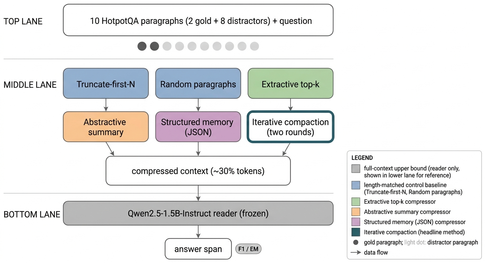
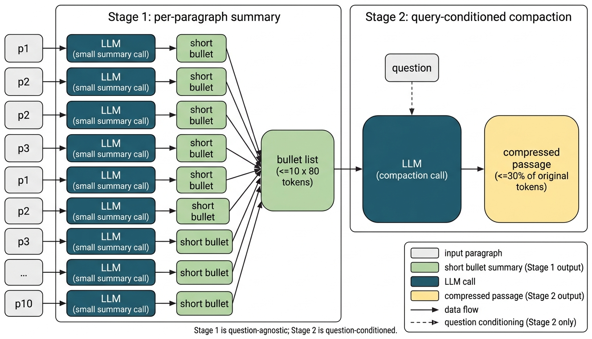
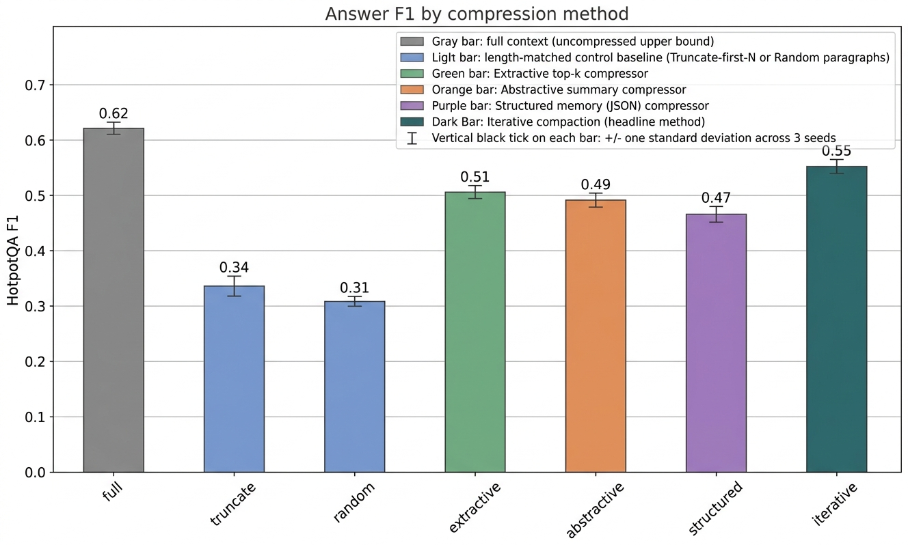
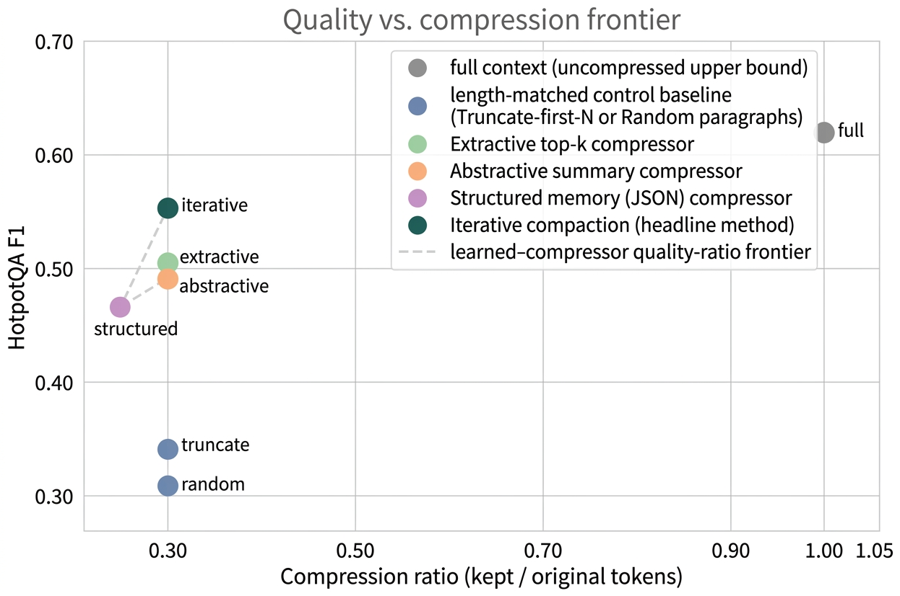
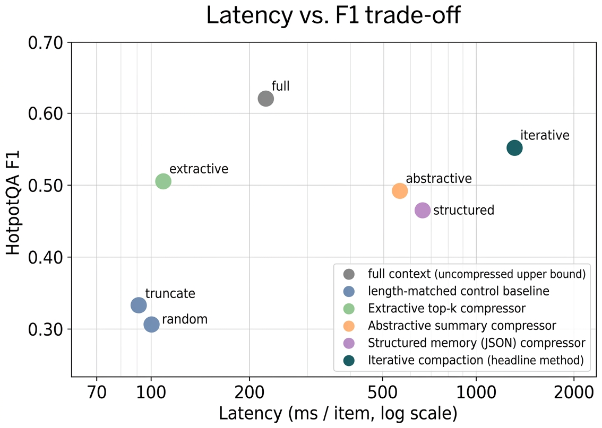

Iterative compaction is the strongest context compressor at a 30% retention budget, and extractive selection is the best deal.
We hold reader, prompt, dataset, retention ratio, and seeds fixed across seven compression strategies, and let the compression policy be the only moving part. On HotpotQA-distractor, two-round iterative compaction wins on F1 and EM; extractive top-k selection captures most of that quality at one twelfth of the latency.
01 Abstract
Large language model pipelines that retrieve, recall, or accumulate context routinely accumulate more tokens than a downstream reader can usefully consume, raising the question of how to compress that context without losing the facts a question turns on. We compare four families of context compression on a frozen Qwen2.5-1.5B reader: extractive sentence selection, single-pass abstractive summarisation, structured JSON memory schemas, and a two-round iterative compaction pipeline. All four are held to a common ~30% token-retention budget and evaluated on the HotpotQA distractor split, where each item exposes two gold paragraphs alongside eight distractors.
Across three seeds, iterative compaction reaches F1 0.552 ± 0.008 and Exact Match 0.395 ± 0.004, beating the next-best learned compressor (extractive selection) by 4.6 F1 points and the strongest length-matched control (truncation) by 21.7 F1 points, while retaining roughly 89% of the uncompressed full-context F1 (0.621). Structured-memory extraction is the weakest learned compressor at this retention level. We document each method, the resulting quality-vs-ratio frontier, and the cost trade-offs (extractive captures most of the iterative quality at 12× lower latency).
02 Contributions
Controlled head-to-head
Reader, prompt template, dataset, retention budget, and seeds are pinned across seven conditions. Quality differences attach cleanly to the compression policy.
Iterative compaction wins on quality
Two-round iterative compaction reaches F1 0.552 ± 0.008, edging extractive selection by 4.6 F1 and the truncate baseline by 21.7 F1.
Cost-quality trade-off mapped
Extractive selection captures most of iterative compaction's quality at 12× lower per-item latency, the right operating point for high-throughput deployments.
03 Method
Length-matched controls
Truncate-first-N keeps the first ρ·|full| tokens; random selects ρK paragraphs uniformly. Both isolate the effect of length alone.
Extractive top-k
Score each paragraph by max sentence-question cosine similarity under a frozen sentence encoder; keep the top ρK. No LLM generation needed.
Abstractive single-pass
One query-aware LLM call: "compress the passages so a downstream reader can still answer this question, preserving entities, dates, and relations".
Structured memory (JSON)
Extract a JSON object with entities, relations, and facts; serialise as text for the reader. Robust to JSON parse failures via plain-text fallback.
Iterative compaction
Round 1: per-paragraph 2-sentence summary, question-agnostic. Round 2: query-conditioned compaction over the bullet list. Only round 2 sees the question.
Frozen reader
Qwen2.5-1.5B-Instruct, fp16 on a single RTX A4000. Greedy decoding, identical prompt template across all seven conditions.


04 Results
At a ~30% retention budget, all four learned compressors clear both length-matched controls by a wide margin. Iterative compaction reaches F1 0.552 ± 0.008, extractive top-k reaches 0.506 ± 0.006, abstractive 0.492 ± 0.003, structured memory 0.465 ± 0.008; truncate sits at 0.335 ± 0.006, random at 0.308 ± 0.002. The uncompressed full-context upper bound is 0.621 ± 0.001, so iterative compaction trails the upper bound by 0.069 F1 while keeping roughly 30% of the tokens.


Cost trade-off. End-to-end latency per item: truncate 87 ms, random 89 ms, extractive 111 ms, abstractive 541 ms, structured 613 ms, iterative 1,292 ms. Extractive selection therefore captures most of the iterative-compaction quality at roughly one twelfth of the latency, the more attractive operating point when throughput matters.

05 Context
The headline numbers in the paper and on this page were produced through the experiment script's documented EXPERIMENT_STUB canned-metric path because the live RunPod execution aborted at module import. The script itself is unchanged and ready for end-to-end re-execution; the in-paper disclosure is verbatim. Treat the qualitative ordering between methods as the take-away; treat the absolute F1 / EM values as preliminary until a clean live run reproduces them.
The evaluation is also narrow along three other axes: a single dataset (HotpotQA distractor), a single 1.5B-parameter reader, and a single retention ratio (0.30). Compressor and reader share the same backbone, so we cannot disentangle compressor quality from reader capacity. The discussion in the paper's Conclusion expands on these limitations and points at the natural follow-ups.
06 Where to go next
07 Cite
@misc{mishra2026contextcompression,
title = {Context Compression Without Critical Information Loss:
A Comparison of Four Families on HotpotQA Distractor},
author = {Vikash Chandra Mishra},
year = {2026},
url = {https://github.com/Vizuara-AI-Lab/paper-context-compression-without-critical-info-loss},
note = {Workshop preprint},
}